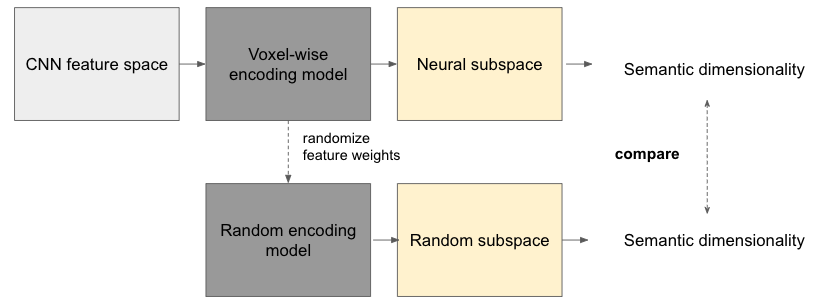

Kelsey Han
PhD Student Department of Cognitive Science Johns Hopkins University chan21@jhu.edu
Welcome! I am a Ph.D. student advised by Prof. Michael Bonner at Johns Hopkins University Department of Cognitive Science.
My research interests involve leveraging computational modeling and neuroimaging techniques for understanding representations in biological and artificial systems.
Prior to my doctoral training, I received M.S. in Electrical Engineering from KAIST and B.A. in Cognitive Science (Minor: Neuroscience) from Carleton College. I worked as a software engineer at Software R&D Center, Samsung Electronics and as a data analyst at a brain imaging device manufacturing startup incubated at KAIST.
News
- Mar 2021: First-year project at JHU CogSci is accepted for a poster presentation at VSS 2021, with Elseveir/Vision Research Travel Award.
- Sep 2020: I joined BonnerLab as a PhD student!
Research
|  |
Quantifying the latent semantic content of visual representations (VSS 2021)
How does visual cortex extract semantic meaning from images? To address this question, we developed a statistical measure called semantic dimensionality that quantifies the number of language-derived semantic properties that can be decoded from a set of image-computable perceptual features. By me, Caterina Magri, Michael Bonner |

|
MHSAN: Multi-head self-attention network for visual semantic embedding (WACV 2020)
We propose a novel multi-head self-attention network to attend to various components of visual and textual data. Our approach achieves an effective and interpretable visual-semantic joint space and obtains new state-of-the-art results in image-text retrieval tasks. By Geondo Park, me, Wonjoon Yoon, Daeshik Kim |

|
Representation of adversarial examples in humans and deep neural networks: an fMRI study (IJCNN 2019; WiML 2019)
Deep neural networks are vulnerable to adversarial examples, input images on which subtle, carefully designed noises are added to fool a machine classifier. We compare the visual representations of adversarial examples in deep neural networks and humans with functional magnetic resonance imaging (fMRI) and the representational similarity analysis (RSA) framework. By me, Wonjun Yoon, Gihyun Kwon, Seungkyu Nam, Daeshik Kim |

|
Generation of 3D brain MRI using auto-encoding generative adversarial networks (MICCAI 2019)
We generate realistic brain MR images of multiple types (e.g. normal or diseased) and modalities (e.g. T2 or FLAIR) from scratch, as opposed to image-to-image translation, by leveraging alpha-GAN with WGAN-GP. By Gihyun Kwon, me, Daeshik Kim |